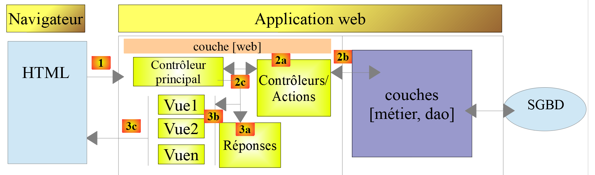

1. Introduction au langage PHP 7
Ce document fait partie d’une série de quatre articles :
- [Introduction au langage *PHP7* par l’exemple]. C’est le document présent ;
- [Introduction au langage *ECMASCRIPT 6* par l’exemple] ;
- [Introduction au framework *VUE.JS* par l’exemple] ;
- [Introduction au framework *NUXT.JS* par l’exemple] ;
Ce sont tous des documents pour débutants. Les articles ont une suite logique mais sont faiblement couplés :
- le document [1] présente le langage PHP 7. Le lecteur seulement intéressé par le langage PHP et pas par le langage Javascript des articles suivants s’arrêtera là ;
- les documents [2-4] visent à construire un client Javascript au serveur de calcul de l’impôt développé dans le document [1] ;
- les frameworks Javascript [vue.js] et [nuxt.js] des articles 3 et 4 nécessitent de connaître le Javascript des dernières versions d’ECMASCRIPT, celles de la version 6. Le document [2] est donc destiné à ceux qui ne connaissent pas cette version de Javascript. Il fait référence au serveur de calcul de l’impôt construit dans le document [1]. Le lecteur de [2] aura alors parfois besoin de se référer au document [1] ;
- une fois ECMASCRIPT 6 maîtrisé, on peut aborder le framework VUE.JS qui permet de construire des clients Javascript s’exécutant dans un navigateur en mode SPA (Single Page Application). C’est le document [3]. Il fait référence à la fois au serveur de calcul de l’impôt construit dans le document [1] et au code du client Javascript autonome construit en [2]. Le lecteur de [3] aura alors parfois besoin de se référer aux documents [1] et [2] ;
- une fois VUE.JS maîtrisé, on peut aborder le framework NUXT.JS qui permet de construire des clients Javascript s’exécutant dans un navigateur en mode SSR (Server Side Rendered). Il fait référence à la fois au serveur de calcul de l’impôt construit dans le document [1], au code du client Javascript autonome construit en [2] ainsi qu’à l’application [vue.js] développée dans le document [3]. Le lecteur de [4] aura alors parfois besoin de se référer aux documents [1] [2] et [3] ;
Ce document propose une liste de scripts console PHP 7 dans différents domaines (structures du langage, accès aux fichiers, aux bases de données, au réseau internet). La programmation web est abordée via des services web. On a appelé dans ce document, service web, toute application web produisant du texte brut. Ce sont des serveurs de données et non des serveurs de pages web qui sont un mixte HTML, CSS et Javascript. On y aborde des concepts web classiques (protocole HTTP, réponses jSON ou XML, gestion de session, authentification) également utilisés dans la programmation web classique.
De nos jours, il est fréquent de construire des applications web en mode client / serveur :

- en [1], le navigateur web affiche des pages web à destination d’un utilisateur [5, 7]. Ces pages contiennent du Javascript implémentant un client d’un service web de données [2] ainsi qu’un client d’un serveur de fragments de pages web [3]. Un framework JS bien établi dans ce domaine est Angular 2 de Google (mai 2019) ;
- en [2], le serveur web est un serveur de données. Il peut être écrit dans n’importe quel langage. Il ne produit pas de pages web au sens classique (HTML, CSS, Javascript) sauf peut-être la 1ère fois. Mais cette 1ère page peut être obtenue d’un serveur web classique [3] (pas un serveur de données). Le Javascript de la page initiale va alors générer les différentes pages web de l’application en obtenant les données [4] à afficher auprès du serveur web qui agit comme un serveur de données [2]. Il peut également obtenir des fragments de page web [5] pour habiller ces données auprès du serveur de pages web [3] ;
- en [4], l’utilisateur initie une action ;
- en [6,7] : il reçoit des données habillées par un fragment de page web ;
Nous allons dans ce document écrire des applications client / serveur en PHP7 ayant la structure suivante :

On a là une application client / serveur écrite en PHP. Un script console [9] interrogera un serveur de données [4]. Ce qui sera appris ici pour écrire le service de données pourra être réutilisé dans une application web. Le service de données en PHP pourra être conservé et le client PHP sera lui remplacé par un client Javascript.
Comme fil rouge du document, nous construirons un service de calcul de l’impôt en 13 versions. La version 13 aura l’architecture suivante :

La couche [web] du serveur aura une architecture MVC (Model – View – Controller). Tout le cours PHP 7 vise à construire cette version.
Les scripts de ce document sont commentés et leur exécution console reproduite. Des explications supplémentaires sont parfois fournies. Le document nécessite une lecture active : pour comprendre un script, il faut à la fois lire son code, ses commentaires et ses résultats d'exécution.
Les exemples du document sont disponibles |*ici*|.
L’application serveur PHP 7 peut être testée |*ici*|.
Serge Tahé, juillet 2019